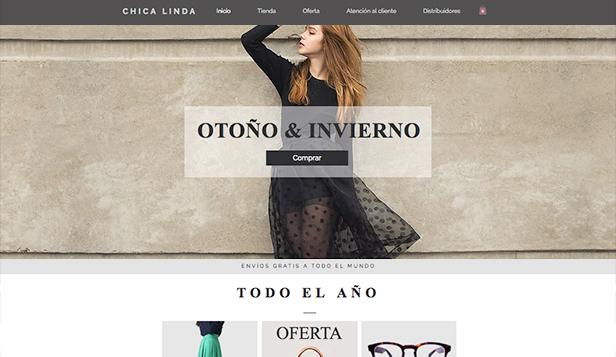

Los sitios corporativos o institucionales son los sitios oficiales de empresas o instituciones, cuyo propósito es ofrecer información general sobre su actividad y otras características importantes como datos de contacto, oportunidades laborales, historia, eventos, noticias y, por supuesto, mostrar sus productos y servicios.
La misión de los sitios educativos es publicar contenidos de diversa índole con los que las personas puedan aprender. Puedes encontrar desde contenidos gratuitos para niños, hasta contenidos con costo para profesionales. En este tipo de sitios también pueden incluirse aquellos que pertenecen a las instituciones universitarias en la modalidad virtual.

Las tiendas en línea son versiones web de lo que esperarías de una tienda real, así que puedes encontrar catálogos de productos, promociones, recomendaciones y hasta comentarios de otros compradores. Los pagos se hacen a través de tarjetas de crédito y los despachos se hacen a través de empresas de encomiendas a nivel nacional o internacional.